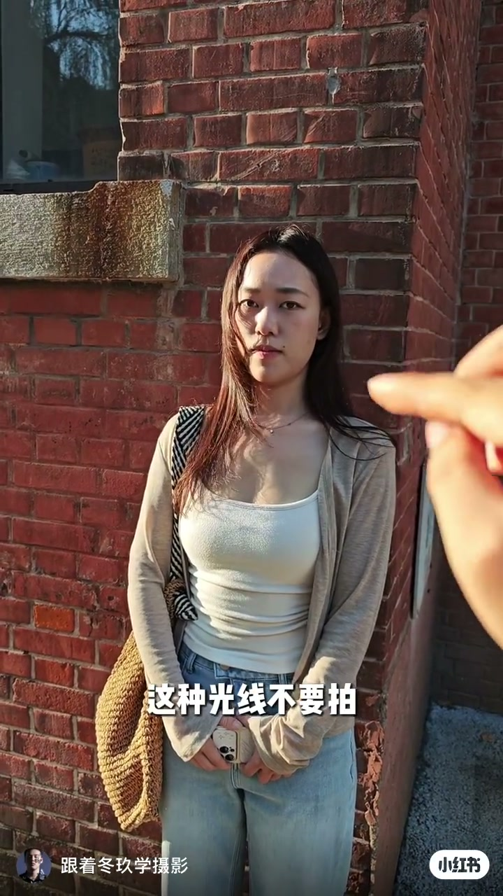
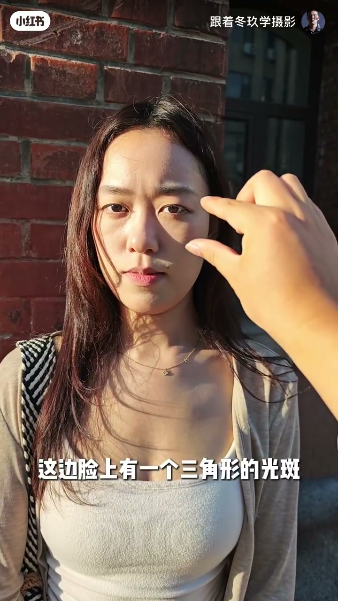
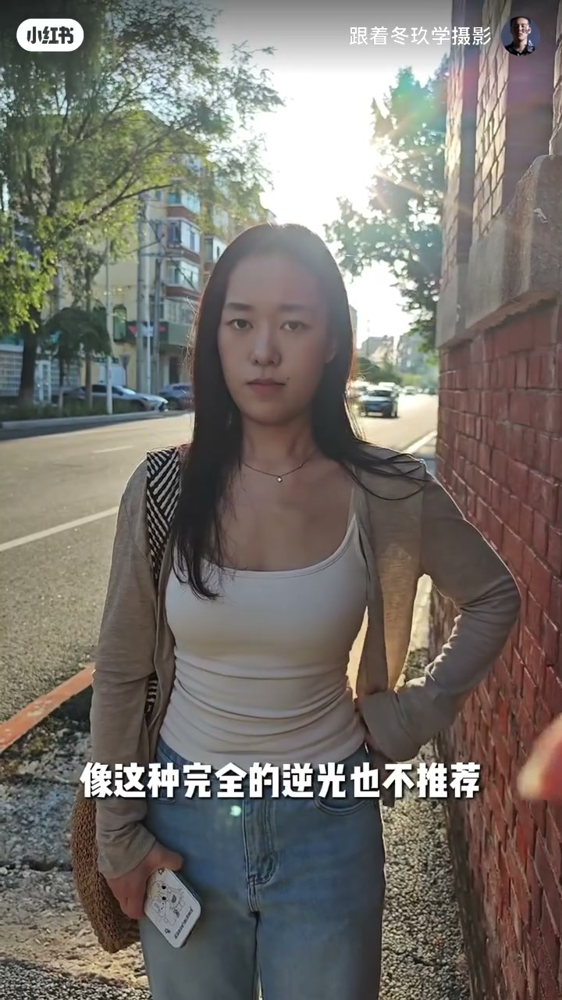
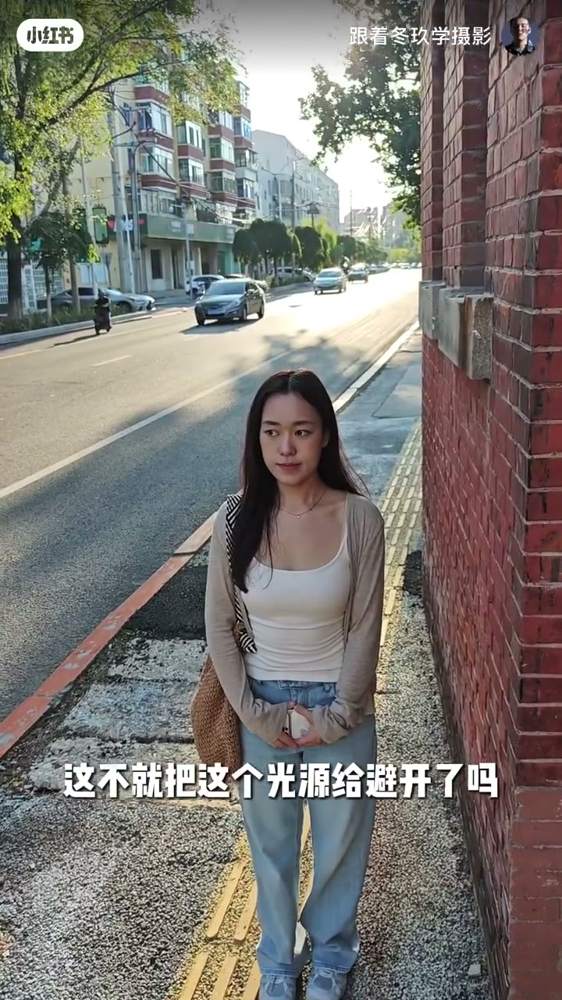

内容要点
「跟着冬玖学摄影」用街边红砖墙人像演示：下午直射侧光容易把脸切成一半亮一半暗、留下三角光斑，甚至让模特眯眼——这是要避开的硬光。相对好看的光是议题，但把太阳拍进画面的完全逆光同样不推荐；对策是挡光源，或贴墙进入建筑阴影主动找光。Whisper 仅捕获两句碎片口播，下列叙述以画面字幕与操作演示为主。
知识结构
硬侧光：半边脸亮、三角光斑、模特睁不开眼——标为要避免的光线。
看明暗「硬边缘」；相对好看的光 vs 完全逆光（太阳入画）也不推荐。
先挡太阳光源；挡不住就贴墙进阴影，等于避开直射。
下午拍照先判光质：硬侧光与完全逆光都易毁人像；用手挡或进墙影，把「找光」变成可执行的站位选择。
00:00–00:30硬侧光：半边脸亮、三角光斑与眯眼
开场字幕直接提醒「拍照的时候切记哈」。模特靠在红砖墙前，下午太阳从侧面打过来：一边脸高光刺眼，另一边沉进阴影——字幕写「他一半脸亮」，并点明这是「要避免的一个光线」。
接着演示更糟的结果：模特被直射光逼得「都睁不开眼睛」。讲解者用手指点向脸颊，字幕强调「这边脸上有一个三角形的光斑」——硬侧光不仅对比大，还会在脸上留下形状怪异的高光块。口播碎片里也说到「这种光线不要拍」，与画面一致。


00:30–01:00硬光边缘、相对好看的光与完全逆光
中段继续盯着明暗交界：手指比出「你看它这个边缘」。Whisper 只听清「比较硬的一个一个」，结合画面可理解为在说光「硬」、过渡不柔。作者抛出问题「我们什么光线是最好的呢」，并给出相对表述——「光线是相对来讲最好看的」——视频未展开参数公式，重点仍是对照坏光。
机位拉开到街景后，太阳落到模特脑后：轮廓发亮、脸部偏暗、眩光明显。字幕明确：「像这种完全的逆光也不推荐」「因为如果你把太阳拍进去了」。也就是说，下午找光不等于追逆光剪影；把太阳本身拍进画面，往往让人像更难成立。

01:00–01:27挡光源，或贴墙进阴影避开直射
对策先给「挡」：用手或其他遮挡把「太阳这个光源给挡住」。若现场没法挡，字幕追问「如果你没法挡光源怎么办呢」——随即让模特贴着红砖墙，站进建筑投下的阴影里：街面仍是强光，人物却离开了直射区。字幕收束：「这不就把这个光源给避开了吗」「也是比较好看的」。
片尾字幕只剩半句「我们应该去找」——结合整条视频，意思是主动去找合适的光位（阴影、遮挡后的柔光），而不是站在最刺眼的直射里硬拍。本段 Whisper 为空，步骤完全来自字幕与站位变化。

完整转录（2段）
以下文本由 Whisper medium 模型自动转录（已转简体），本片口播识别极短；章节叙述主要依据画面简体字幕与站位演示，可能与口播细节有出入。
拍照的时候切记好这种光线不要拍
比较硬的一个一个